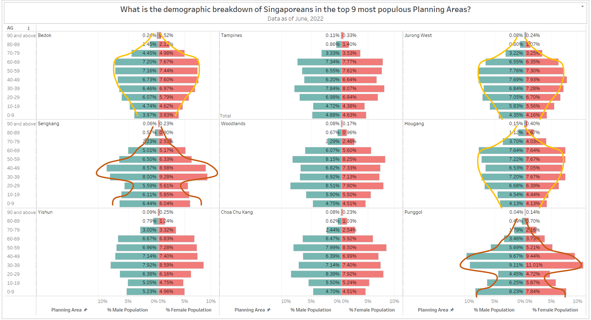

Take-home Exercise 1
Comparing Singapore resident demographic by sub-zone with Trellis chart
1. The task
Age-sex pyramid is an analytical visualization commonly used by demographers to reveal the structure of population by gender and age group. In this take-home exercise, you are required to reveal the demographic structure of Singapore at planning area level by using age-sex pyramid method. Instead of plotting a single age-sex pyramid, however, you are required to display nine selected planning areas on a single view by using trellis display (also know as small-multiple plot).
2. Data
“Singapore Residents by Planning Area / Subzone, Age Group, Sex and Type of Dwelling, June 2022” is used to prepare the analytical visualization. It is available at Department of Statistics, Singapore(SingStat).
Metadata
PA = Planning Area
SZ = Subzone
AG = Age Group
Sex = Sex
TOD = Type of Dwelling
Pop = Resident Count
Time = Time / Period
Note:
- For June 2022, Planning Areas refer to areas demarcated in the Urban Redevelopment Authority’s Master Plan 2019.
- Data from 2003 onwards exclude residents who have been away from Singapore for a continuous period of 12 months or longer as at the reference period.
- The figures have been rounded to the nearest 10. 4) The data may not add up due to rounding.
Date generated: 29/02/2022 Source: Singapore Department of Statistics
3. Analysis
What is the distribution of Singapore residence by Planning Area?

The above bar chart depicts the number of residents in each Planning Area. In this scenario, we choose the 9 most populous areas, which account for 52.3% of the overall population.
Now, let’s examine the demographic specifics of these nine regions. What is the age and gender distribution of the population in each area? We will utilize the pyramid chart, which is separated into equal-height horizontal divisions. The width of each part varies. Population pyramids are produced using a horizontal column chart with positive and negative values. These graphs permit comparisons of distinct categories (in this case, age) across two series (male and female).
In addition, for comparative purposes, we introduce Trellis plot techniques, which consist of a grid of smaller plots. Each small plot represents a unique state or item, and all small plots have identical scales.
What is the demographic breakdown of Singaporeans in the top 9 most populous Planning Areas?


At first glance, the shapes of all 9 selected areas are symmetrical. This reflects the proportional distribution of males and females. However, there are a variety of shapes. Bedok, Jurong West, and Hougang have a similar shape, with a symmetrical small apex that gradually widens and tapers to a smaller base. These 3 regions contain a substantial proportion of residents between the ages of 40-69. While Sengkang and Punggol have a form that widens in the 30-59-year age range, the population in the 20-29-year age group is much smaller.
This graph also reveals that the senior female population tends to be slightly more than the senior male population.

4. Visualization Design Discussion
From the Trellis plot above
- Bedok, which is the most populous area has a big percentage of Senior generation (60 and above) compare to the other area
5. Step-by-Step Description
1. Prepare the data
In this project, we prepare the data using Tableau Prep Builder version 2022.4.0, which makes data preparation simple and intuitive.
| No. | Step |
|---|---|
| 1.1 |
|
| 1.2 |
|
| 1.3 |
|
| 1.4 |
|
| 1.5 |
|


2. Prepare the visualization Design 1
Now that we have import the cleansed data into Tableau Desktop
| No. | Step |
|---|---|
| 2.1 |
|
| 2.2 |
|
| 2.3 |
|
| 2.4 |
|
| 2.5 |  |
| 2.6 |  |
| 2.7 |  |
| 2.8 |  |
| 2.9 |  |
| 2.10 |  |
| 2.11 |  |
| 2.12 |  |
| 2.13 |  |


6. Reference
Egervari. (n.d.). The Data School - Displaying multiple Charts in one Worksheet – The Trellis Chart. The Data School - Displaying Multiple Charts in One Worksheet – the Trellis Chart. Retrieved January 21, 2023, from https://www.thedataschool.co.uk/frederik-egervari/displaying-multiple-charts-in-one-worksheet-the-trellis-chart/
Betzendahl, L. (2019, April 25). Trellis Charts and Color Highlighting. Viz Zen Data. Retrieved January 21, 2023, from https://vizzendata.com/2019/04/25/trellis-charts-and-color-highlighting/
(2017, February 17). Workout Wednesday Week 7 - Dynamic Trellis Chart. Visual Vantage. Retrieved January 21, 2023, from http://www.tarannum.io//2017/02/17/workout-wednesday-week7.html
Sleeper. (2017, August 22). How to Make Trellis / Tile / Small Multiple Maps in Tableau | Playfair Data. Playfair Data. Retrieved January 21, 2023, from https://playfairdata.com/how-to-make-trellis-tile-small-multiple-maps-in-tableau/
(2020, June 22). A Detailed Guide on How to Create a Tableau Pareto Chart | DataCrunchCorp. A Detailed Guide on How to Create a Tableau Pareto Chart | DataCrunchCorp. Retrieved January 21, 2023, from https://datacrunchcorp.com/tableau-pareto-chart/